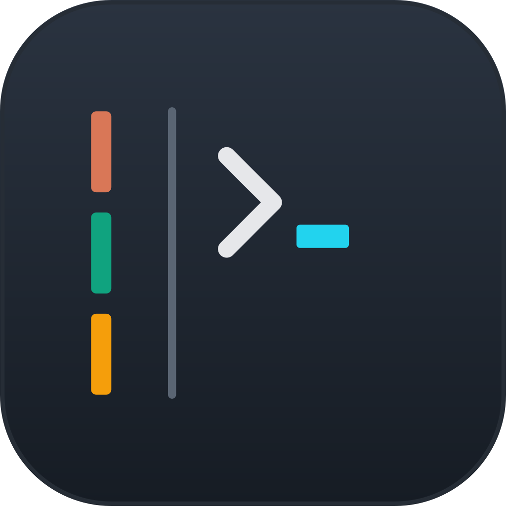
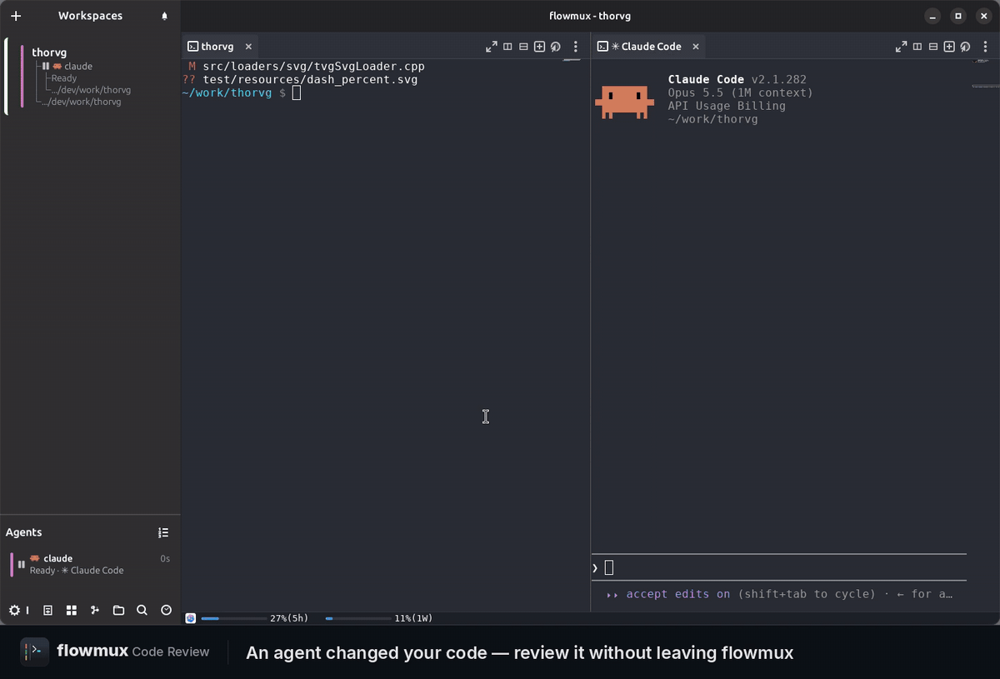
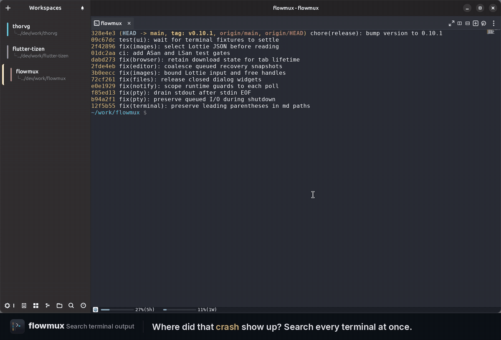
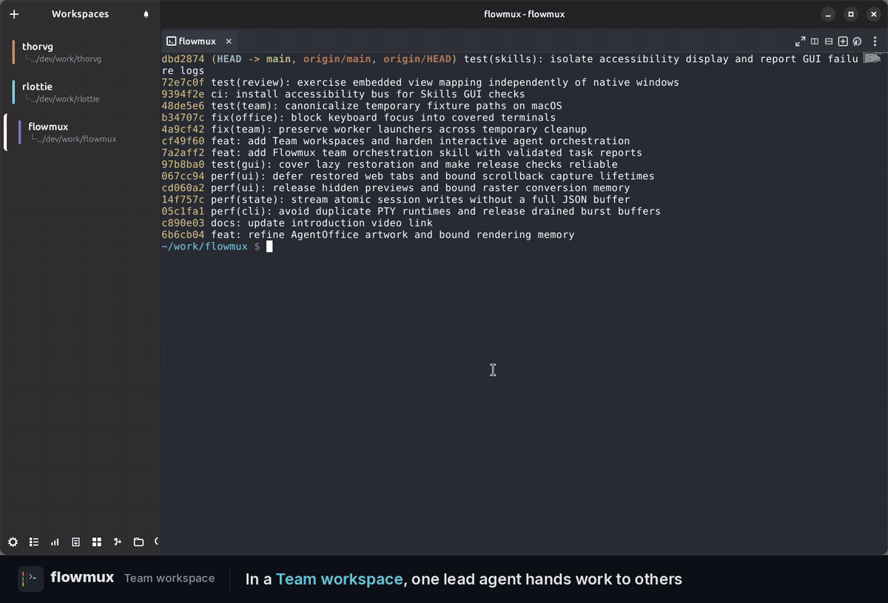
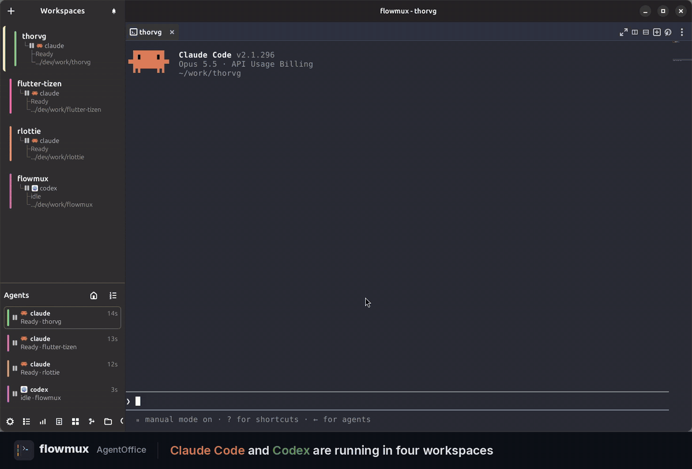

agent notifications
Agent notifications
See at a glance which agent is working, waiting for your approval, or done. Click the notification and you are back in that workspace.
working → attention → done

flowmuxterminal
Native AI agent terminal workspace.
Run Claude Code, Codex, and OpenCode with terminal panes, browser control, and task signals.
curl -fsSL https://flowmux.org/install.sh | sh
Ubuntu 24.04+ · amd64 · SHA-256 verified
Open source · Native · GPL-3.0
features
Team workspaces, AgentOffice, browser control, code review, terminal search, and more.
agent notifications
See at a glance which agent is working, waiting for your approval, or done. Click the notification and you are back in that workspace.
working → attention → done
browser control
Agents open a page, read it, fill in fields, and click through it with the flowmux CLI, right next to the terminal where you can watch.
flowmux browser snapshot
workspace layout
Split right or down, zoom into a single pane when you need focus, and start another agent in a new tab.
pane + tab + workspace
workspace navigation
See every active workspace at a glance and jump directly to the one you need.
all workspaces + quick jump
repository views
Browse the repo and open files in the built-in editor, keep an eye on your Git worktrees, and check Claude and Codex usage without leaving the window.
files + worktrees + usage
code review
Review staged, unstaged, and new files in your terminal pane. Add comments to code or whole files, then send feedback with code context to a running agent.
Ctrl+Alt+E · comment → send

terminal search
Search output across workspaces and terminal tabs. Each result shows its workspace and tab; click it or use the arrow keys and Enter to jump to the matching line, even in a hidden tab.
Ctrl+Alt+Shift+F · search → jump

appearance
Switch between built-in themes, dark or light, or set your own terminal colors. Shortcuts can be rebound too, no restart needed.
Options → Theme · Keybindings
agent collaboration
Give one lead agent a task. It delegates to Claude Code and Codex workers in visible split panes, collects their results, and asks for corrections. Follow every conversation and keep working with the same team.
Install Flowmux Team from Options → Skills, create a Team workspace, and start your lead agent there.
New Team Workspace

your agents at a glance
Watch your agents in a living pixel-art office. Each workspace with agents becomes a room where teammates work, wait for your input, or take a break. Status icons and speech bubbles show who needs attention.
Open the home icon in the Agents header. Select a room to take a closer look, or click a character to jump to its terminal. The office stays open as your team creates new split panes.
Agents → AgentOffice

file previews
Ctrl+click an image path to open it. SVG stays sharp at any size, Lottie animations play right away, and Markdown previews refresh every time you save.
image + animation + markdown
workspace
Keybindings, session recovery, navigation, usage, and browser state.
Rebinds shortcuts in Options and applies changes without a restart.
Restores layouts, terminal scrollback, tabs, and browser sessions.
Shows active agents and provides pane focus and stop controls.
Shows account usage limits from the Agent Bar.
Stores browser history, permissions, and downloads.
Opens workspaces, panes, tabs, commands, and files.